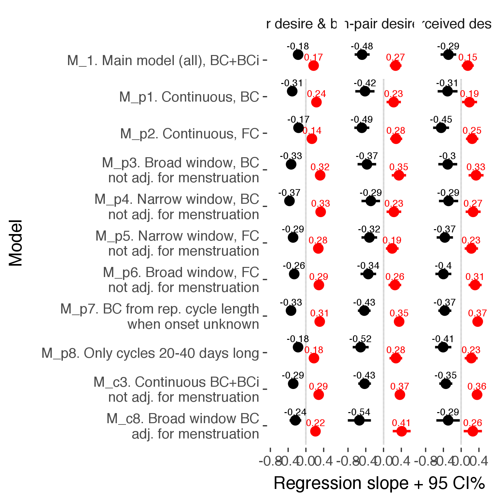

library(knitr)
opts_chunk$set(fig.width = 8, fig.height = 8, cache = T, warning = T, message = F, cache = F)
source("0_helpers.R")
load("full_data.rdata")
diary = diary %>%
mutate(
included = included_all,
fertile = if_else(is.na(prc_stirn_b_squished), prc_stirn_b_backward_inferred, prc_stirn_b_squished)
) %>% group_by(person) %>%
mutate(
fertile_mean = mean(fertile, na.rm = T)
)
opts_chunk$set(warning = F)
library(Cairo)
opts_chunk$set(dev = "CairoPNG")predictor_check = function(obj) {
get_coefs = function(fit, model_name) {
library(broom)
if (class(fit) == "lme") {
obj_coef = tryCatch({my_tidy.lme(fit, effects = 'fixed') }, error = function(e) { cat_message(e, "danger") })
} else {
obj_coef = tryCatch({tidy(fit, conf.int = TRUE, effects = "fixed")}, error = function(e) { cat_message(e, "danger") })
}
obj_coef$model = model_name
obj_coef
}
outcome = as.character(formula(obj)[2])
less_ctrl_formula = update.formula(formula(obj), new = . ~ . - included * menstruation - fertile_mean)
tryCatch({
diary_broad = diary %>% mutate(fertile = fertile_broad)
update(obj, formula = less_ctrl_formula, data = diary_broad) -> broad_window
}, error = function(e) { cat_message(e, "danger") })
tryCatch({
diary_broad = diary %>% mutate(fertile = fertile_broad)
update(obj, data = diary_broad) -> broad_window_ctrl
}, error = function(e) { cat_message(e, "danger") })
tryCatch({
diary_bci = diary %>% mutate(fertile = prc_stirn_b_backward_inferred)
update(obj, formula = less_ctrl_formula, data = diary_bci) -> backward_inferred
}, error = function(e) { cat_message(e, "danger") })
tryCatch({
update(obj, formula = less_ctrl_formula) -> fewer_controls
}, error = function(e) { cat_message(e, "danger") })
tryCatch({
diary_narrow = diary %>% mutate(fertile = fertile_narrow)
update(obj, formula = less_ctrl_formula, data = diary_narrow) -> narrow_window
}, error = function(e) { cat_message(e, "danger") })
tryCatch({
diary_cont_fc = diary %>% mutate(fertile = prc_stirn_b_forward_counted)
update(obj, data = diary_cont_fc) -> forward_counting
}, error = function(e) { cat_message(e, "danger") })
tryCatch({
diary_narrow_fc = diary %>% mutate(fertile = fertile_narrow_forward_counted)
update(obj, formula = less_ctrl_formula, data = diary_narrow_fc) -> forward_counting_narrow
}, error = function(e) { cat_message(e, "danger") })
tryCatch({
no_long = diary %>% filter(is.na(cycle_length_diary) | (cycle_length_diary >= 20 & cycle_length_diary <= 40))
update(obj, data = no_long) -> cycles_between_20_40
}, error = function(e) { cat_message(e, "danger") })
tryCatch({
diary_broad_fc = diary %>% mutate(fertile = fertile_broad_forward_counted)
update(obj, formula = less_ctrl_formula, data = diary_broad_fc) -> forward_counting_broad
}, error = function(e) { cat_message(e, "danger") })
tryCatch({
diary_cont = diary %>% mutate(fertile = prc_stirn_b)
update(obj, data = diary_cont) -> backward
}, error = function(e) { cat_message(e, "danger") })
tryCatch({
diary_broad = diary %>% mutate(fertile = fertile_broad)
update(obj, data = diary_broad) -> broad_window_ctrl
}, error = function(e) { cat_message(e, "danger") })
models_in_function = ls_type(c('lmerMod','glmerMod','bglmerMod','blmerMod','merModLmerTest','lme','lm'))
coefs = rbindlist(lapply(models_in_function, FUN = function(x) { get_coefs(get(x), x) }), fill = TRUE)
# eff_coefs = rbindlist(lapply(models_in_function, FUN = function(x) { get_eff_coefs(get(x), x) }), fill = TRUE)
coefs$model = dplyr::recode_factor(factor(coefs$model),
'obj' = 'M_1. Main model (all), BC+BCi',
'included_lax' = 'M_e2. Lax exclusion criteria',
'included_conservative' = 'M_e3. Conservative exclusion criteria',
'included_strict' = 'M_e4. Strict exclusion criteria',
'nododgy' = 'M_e5. Exclude potentially dodgy data',
'backward' = 'M_p1. Continuous, BC',
'forward_counting' = 'M_p2. Continuous, FC',
'broad_window' = 'M_p3. Broad window, BC\nnot adj. for menstruation',
'narrow_window' = 'M_p4. Narrow window, BC\nnot adj. for menstruation',
'forward_counting_narrow' = 'M_p5. Narrow window, FC\nnot adj. for menstruation',
'forward_counting_broad' = 'M_p6. Broad window, FC\nnot adj. for menstruation',
'backward_inferred' = 'M_p7. BC from rep. cycle length\nwhen onset unknown',
'cycles_between_20_40' = 'M_p8. Only cycles 20-40 days long',
'between_person' = 'M_d1. Between, FC (first obs. only)',
'within_person_two_occasions' = 'M_d2. Within, FC, high/low 2 obs.',
'within_person_four_occasions' = 'M_d3. Within, FC, two high/low 4 obs.',
'no_cycles_shorter_than_20' = 'M_d4. No cycles shorter than 20 days',
'within_person_avg_hilow' = 'M_d5. Within, BC, average high/low all',
'control_self_esteem' = 'M_c1. Adjust for self esteem',
'dontcontrolavg' = 'M_c2. No adjustment for avg. fertility',
'fewer_controls' = 'M_c3. Continuous BC+BCi\nnot adj. for menstruation',
'control_week' = 'M_c4. Control week day and number',
'control_time_of_response' = 'M_c5. Adjust for time of/for response',
'control_autocorrelation' = 'M_c6. Model autocorrelation, lag 1',
'autocorrelation_moving_avg' = 'M_c7. Model autocorrelation, moving avg., lag 1',
'broad_window_ctrl' = 'M_c8. Broad window BC\nadj. for menstruation', .ordered = T)
coefs$model = factor(coefs$model, levels = rev(levels(coefs$model)))
coefs = coefs %>% mutate(term = recode(term, "fertile:includedhorm_contra" = "includedhorm_contra:fertile"))
coefs_all = coefs
coefs = coefs %>% filter(term == "fertile" | term == "includedhorm_contra:fertile")
}extra_pair = lmer(extra_pair ~ included * (menstruation + fertile) + fertile_mean + ( 1 | person), data = diary)
in_pair_desire = lmer(in_pair_desire ~ included * (menstruation + fertile) + fertile_mean + ( 1 | person), data = diary)
desirability_1 = lmer(desirability_1 ~ included * (menstruation + fertile) + fertile_mean + ( 1 | person), data = diary)
coefs = bind_rows(
extra_pair = predictor_check(extra_pair),
in_pair_desire = predictor_check(in_pair_desire),
desirability_1 = predictor_check(desirability_1),
.id = "outcome"
)
coefs$outcome_label = recode(str_replace_all(str_replace_all(str_replace_all(coefs$outcome, "_", " "), " pair", "-pair"), " 1", ""),
"desirability" = "self-perceived desirability",
"NARQ admiration" = "narcissistic admiration",
"NARQ rivalry" = "narcissistic rivalry",
"extra-pair" = "extra-pair desire & behaviour",
"had sexual intercourse" = "sexual intercourse")
coefplot = ggplot(coefs, aes(x = model, y = estimate, ymax = conf.high, ymin = conf.low, colour = term), group = 1) +
geom_segment(y = 0, yend = 0, x = 0.5, xend = 10.5, linetype = "dotted", color = "gray70") +
# geom_segment(aes(y = if_else(model %contains% "M_1", estimate, NA_real_), yend = if_else(model %contains% "M_1", estimate, NA_real_)), x = 0.5, xend = 10.5, linetype = 'dashed') +
geom_text(aes(label = round(estimate,2), y = estimate), position = position_dodge(width = 0.6), vjust = -0.7) +
geom_pointrange( position = position_dodge(width = 0.6), size = 1) +
scale_color_manual("Contraception status", values = c("includedhorm_contra:fertile"="black","fertile" = "red"), labels = c("includedhorm_contra:fertile"="hormonally\ncontracepting","fertile" = "fertile"), guide = F) +
xlab("Model") +
ylab(paste("Regression slope + 95 CI%")) +
coord_flip() +
facet_wrap(~ outcome_label, ncol = 3)
print(coefplot)
ggsave(coefplot, filename = "coefplot_predictors.png", width = 16, height = 10)